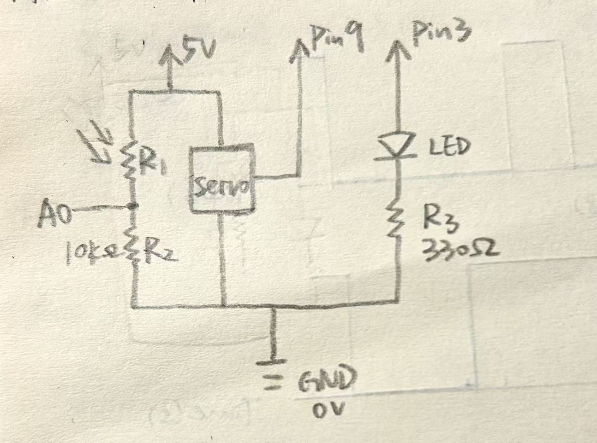
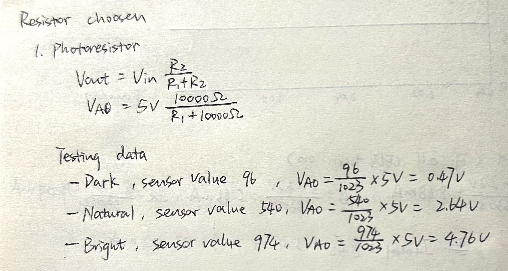
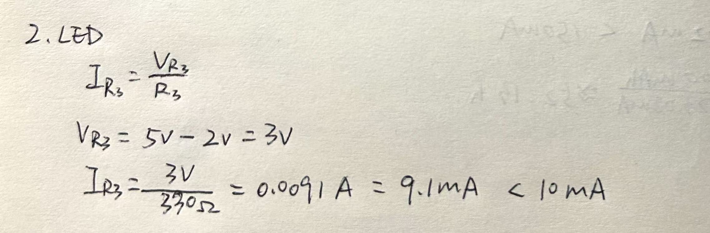
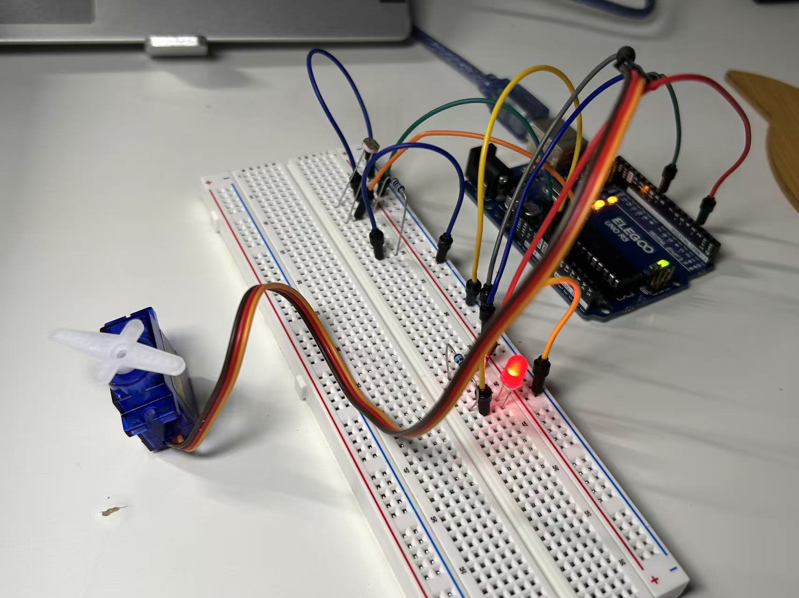
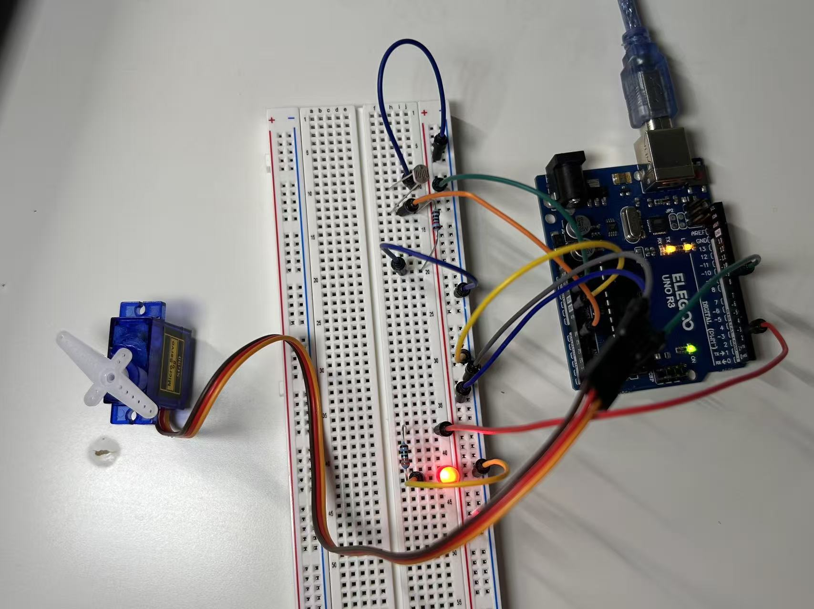
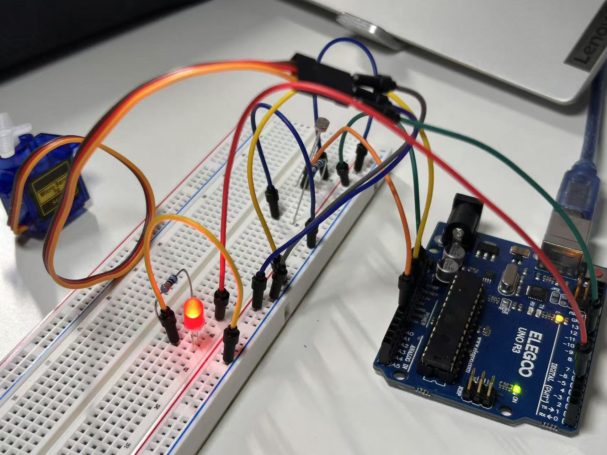
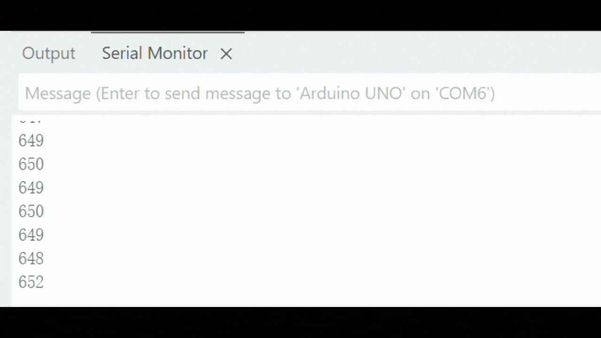
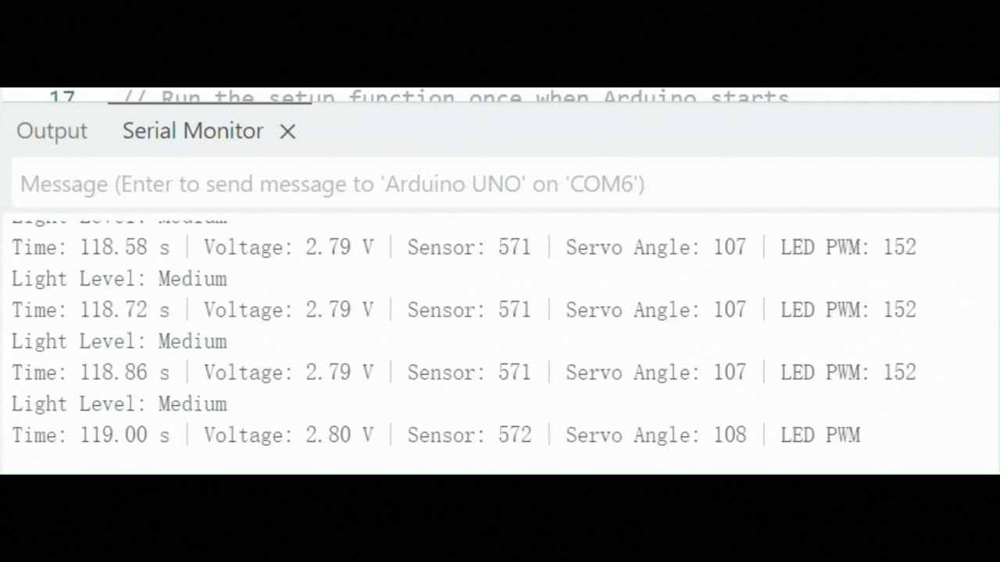
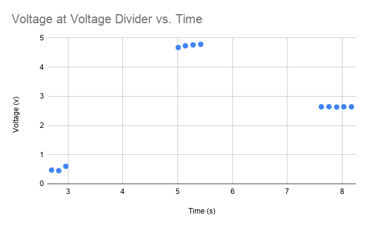

In this assignment, I built a circuit using a photoresistor,
a servo motor, and an LED. The photoresistor detects changes in environmental
light, and the servo motor changes its angle to indicate the light level.
The LED also changes its brightness based on the sensor value.
1. Circuit Schematic & Components

The photoresistor (R1) is connected between 5V and A0, and a 10kΩ
resistor (R2) connects A0 to GND to create a voltage divider.
The servo motor is connected to Pin 9, 5V, and GND.
The LED is connected to Pin 3 in series with a 330Ω resistor
and then to GND.
I used an Arduino Uno R3, a breadboard, a photoresistor, a 10kΩ
resistor, a servo motor, an LED, and a 330Ω resistor.
The photoresistor changes its resistance depending on the environmental
light intensity. The Arduino reads the voltage at A0 and uses it to
control the servo angle and LED brightness.
Resistor Selection
I used a 10kΩ resistor with the photoresistor to create a voltage
divider, allowing Arduino to detect light changes at A0.
The 10kΩ resistor provides readable voltages even in low light.
As calculated below, the voltages were 0.47V in dark conditions,
2.64V under normal lighting, and 4.76V under bright lighting.
Servo Motor
The servo motor is connected to 5V, GND, and Pin 9.
I used the Servo library and Servo.write() to control
its angle based on the photoresistor readings.

Notes and calculations related to the servo motor.
LED Current-Limiting Resistor
I used a 330Ω resistor in series with the LED to limit the current and protect
it from damage. Assuming a 5V output and an LED forward voltage of approximately
2V, the current is approximately 9.09mA, less than 10mA, in a safe current range.

I used a 330Ω resistor to limit the current through the LED
to approximately 9.09mA when the output is HIGH.
2. Circuit & Operation



The circuit includes a photoresistor voltage divider,
a servo motor, and an LED. The photoresistor is connected to A0,
the servo motor signal wire is connected to Pin 9, and the LED
is connected to PWM Pin 3 with a 330Ω resistor.
Photoresistor Testing
I first tested the photoresistor using Example analogRead() and the
Serial Monitor. I observed sensor values of approximately
80 in dark conditions, 620 under natural lighting,
and 900 under bright lighting.

I tested the photoresistor under different lighting conditions
to observe changes in the analog input values. These readings
helped me select the input range of 80 to 900 for the map()
function.
Circuit Operation
After testing the photoresistor, I connected the servo motor
and LED. When the environment light becomes brighter, the servo rotates
toward 180 degrees and the LED becomes brighter. When the environment light
becomes darker, the servo rotates toward 0 degrees and the LED
becomes darker.
The gif demonstrates how the servo angle and LED brightness
change in response to different lighting conditions.
Serial Monitor Output

The Serial Monitor displays the light level, time,
voltage measured at A0, sensor reading, servo angle, and
LED PWM value.
Under dark lighting, the sensor reading was 96, with a voltage
of 0.47V, a servo angle of 3°, and an LED PWM value of 4.
Under bright lighting, these values increased to 974, 4.76V,
180°, and 255.
3. Arduino Code
The code uses analogRead() to read light levels, map() to convert
sensor values, Servo.write() to control the servo, and analogWrite()
to adjust LED brightness. An if-statement identifies the light
level as Dark, Medium, or Bright. Based on my observed readings,
I mapped the input range of 80–900 to servo angles of 0–180°
and LED PWM values of 0–255.
// Include the Servo library.
#include
// Create a servo object.
Servo myServo;
// Set the photoresistor pin.
const int sensorPin = A0;
// Set the servo pin.
const int servoPin = 9;
// Set the LED pin.
const int ledPin = 3;
// Set up the Arduino.
void setup() {
// Start the Serial Monitor.
Serial.begin(9600);
// Connect the servo to pin 9.
myServo.attach(servoPin);
// Set the LED as output.
pinMode(ledPin, OUTPUT);
}
// Repeat the following code.
void loop() {
// Read the light level.
int sensorValue = analogRead(sensorPin);
// Calculate the voltage.
float voltage = sensorValue * (5.0 / 1023.0);
// Calculate the time in seconds.
float timeSeconds = millis() / 1000.0;
// Convert the reading to a servo angle.
int angle = map(sensorValue, 80, 900, 0, 180);
// Keep the angle between 0 and 180.
angle = constrain(angle, 0, 180);
// Move the servo.
myServo.write(angle);
// Convert the reading to LED brightness.
int brightness = map(sensorValue, 80, 900, 0, 255);
// Keep brightness between 0 and 255.
brightness = constrain(brightness, 0, 255);
// Set the LED brightness.
analogWrite(ledPin, brightness);
// Check for dark light.
if (sensorValue < 300) {
// Print Dark.
Serial.println("Light Level: Dark");
}
// Check for medium light.
else if (sensorValue < 700) {
// Print Medium.
Serial.println("Light Level: Medium");
}
// Otherwise, the light is bright.
else {
// Print Bright.
Serial.println("Light Level: Bright");
}
// Print the time label.
Serial.print("Time: ");
// Print the time.
Serial.print(timeSeconds, 2);
// Print the voltage label.
Serial.print(" s | Voltage: ");
// Print the voltage.
Serial.print(voltage, 2);
// Print the sensor label.
Serial.print(" V | Sensor: ");
// Print the sensor value.
Serial.print(sensorValue);
// Print the servo label.
Serial.print(" | Servo Angle: ");
// Print the servo angle.
Serial.print(angle);
// Print the LED label.
Serial.print(" | LED PWM: ");
// Print the LED brightness.
Serial.println(brightness);
// Wait 100 milliseconds.
delay(100);
}
4. Additional Questions
Question 1: Photoresistor as R1 or R2
Yes, the photoresistor can be placed at either R1 or R2.
In my circuit, it is R1, with a fixed 10kΩ resistor as R2.
Under bright lighting, the sensor reading was 974 (4.76V),
giving an estimated photoresistor resistance of 504Ω.
Both ways work, but they produce opposite results.
As light increases, Vout increases when the photoresistor
is R1 and decreases when it is R2.
Question 2: Voltage vs. Time Graph
I recorded the voltage at A0, the midpoint of the
voltage divider, under different lighting conditions.
The graph below shows the measured voltage over time.

The graph shows the voltage measured at A0 over time.
The voltage was approximately 0.45–0.60V under dark
conditions, 4.67–4.78V under bright lighting, and
2.63–2.64V under medium lighting.
The gaps between groups of points represent periods
for which measurements were not included in the graph.
The results show that as light intensity increases,
the photoresistor's resistance decreases, causing
the voltage measured at A0 to increase.
Question 3: AnalogRead() and AnalogWrite()
A 16-bit ADC reads values from 0–65535, while
10-bit PWM outputs values from 0–1023.
To map the full range, I would use:
int brightness = map(sensorValue, 0, 65535, 0, 1023);
To keep my original range of 80–900,
I would scale it to approximately 5125–57659:
This preserves the approximate lighting range
while adjusting to the new resolutions.
Question 4: AI Usage
I used AI to understand the servo motor's circuit connections,
including its power, ground, and signal pins. AI also helped me
check my Arduino code, improve the Serial Monitor output format,
and understand the calculations in the additional questions.
I applied the programming concepts learned in class and referred
to AI suggestions for converting sensor readings into output values.
I also tested the circuit and collected the data myself.